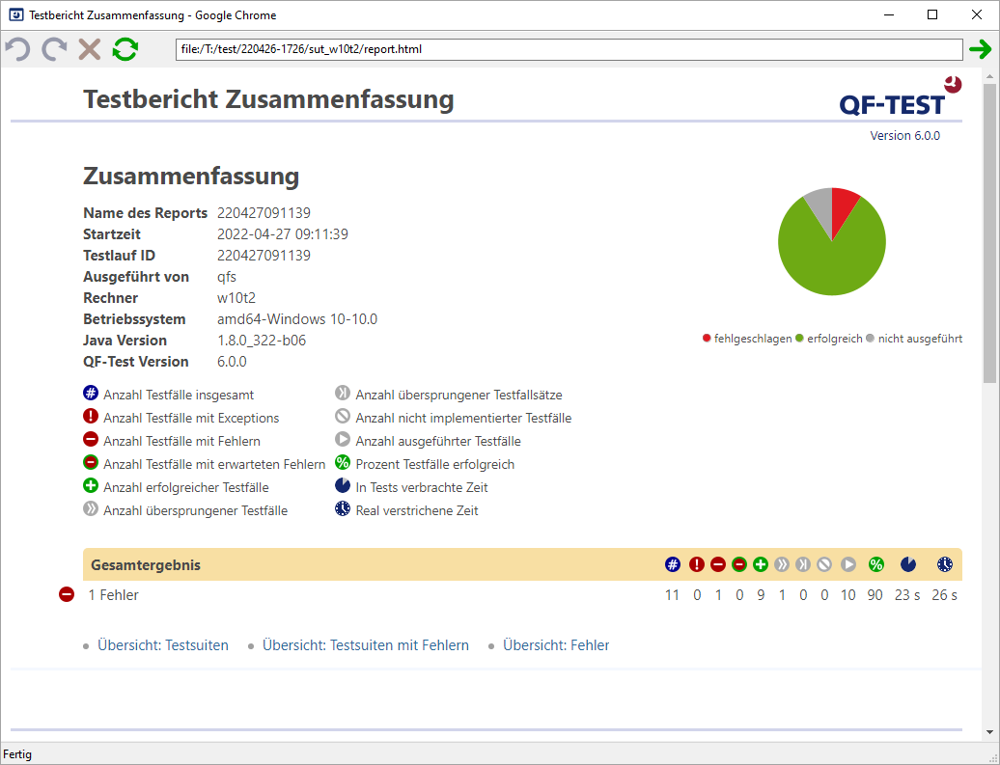

| Version 6.0.3 |
Neben Testsuiten und Protokollen erstellt QF-Test noch eine Reihe weiterer Dokumente. Das wichtigste davon ist der Report, der eine Gesamtübersicht über die Ergebnisse eines oder mehrerer Testläufe liefert, sowie eine Aufstellung der daran beteiligten Testsuiten und deren Einzelergebnissen. Der Report ist leicht zu lesen und ohne tiefere Kenntnis von QF-Test zu verstehen. Er ergänzt damit das Protokoll, welches vor allem der Fehleranalyse dient und ein gutes Verständnis von QF-Test erfordert.
Die folgende Abbildung zeigt ein Beispiel einer Zusammenfassung eines Reports:
|
|  | ||
|
| Abbildung 21.1: Beispiel Report | ||
Die anderen Dokumente sind eher statischer Natur. Sie beschreiben keine Testergebnisse, sondern den Inhalt von Testsuiten. Ein testdoc Dokument gibt einen Überblick über die Struktur der 'Testfallsatz' und 'Testfall' Knoten einer oder mehrerer Testsuiten. Es dient Test-Architekten und QS Projektleitern zur Dokumentation des aktuellen Standes der Testentwicklung. Ein pkgdoc Dokument ist ähnlich aufgebaut, beschreibt stattdessen aber die Struktur der 'Package', 'Prozedur' und 'Abhängigkeit' Knoten, vergleichbar zu JavaDoc, welches zur Dokumentation von Java Bibliotheken genutzt wird. Zielgruppe hierfür sind die Mitarbeiter, welche die Tests implementieren und hierzu Informationen zu bereits vorhandenen Prozeduren und deren Parameter benötigen.
Bevor wir näher auf das Erstellen von Reports eingehen können, müssen zunächst einige grundlegende Konzepte erläutert und Begriffe definiert werden.
Ein Report ist das Ergebnis einer oder mehrerer Testläufe. Ein Testlauf umfasst die Ausführung einer oder mehrerer Testsuiten, normalerweise gemeinsam in einem Batch-Lauf. Ein Testlauf wird durch seine Run-ID identifiziert. Es ist möglich einen Testlauf in mehreren Schritten durchzuführen indem den Protokollen die selbe Run-ID zugewiesen wird.
Ein Report kann einen Reportnamen haben. Für einen Report, der einen einzelnen Testlauf repräsentiert, stimmt dieser normalerweise mit der Run-ID des Testlaufs überein. Für Reports, die mehrere Testläufe zusammenfassen, kann ein eigener Name festgelegt werden.
Reports können in verschiedenen Varianten erstellt werden: XML, HTML und JUnit. Die meisten Anwender werden wohl die HTML Variante nutzen, welche in einem Browser dargestellt, ausgedruckt und archiviert werden kann. Die XML Variante kann als Basis zur weiteren Verarbeitung der Testergebnisse dienen, z.B. um diese in einer Datenbank zu sammeln oder um speziell angepasste HTML Reports zu generieren. Wir empfehlen immer HTML und XML Reports gemeinsam zu erstellen, sofern Sie keinen guten Grund für ein anderes Vorgehen haben. JUnit Reports basieren auf dem JUnit XML Format, wie es Apache Ant mit Hilfe der JUnitReport Task erzeugt. Dieses Format ist nicht so schön und detailliert wie bei den beiden anderen von QF-Test angebotenen Varianten, jedoch wird es direkt von vielen Continuous Integration Tools verstanden und kann hilfreich für eine schnelle Integration mit solchen sein.
Ein Report besteht aus einem Dokument mit der Zusammenfassung sowie je einem Dokument pro Protokoll. Diese werden zusammen mit ergänzenden Dateien wie Icons, Stylesheets und Bildschirmabbildern in einem gemeinsamen Verzeichnis abgelegt. Auf Dateiebene repräsentiert dieses Verzeichnis den Report.
Die Anordnung der Dateien innerhalb des Report Verzeichnisses kann wie weiter unten beschrieben über die Kommandozeile beeinflusst werden. Es gibt im Wesentlichen zwei Varianten die Dateien anzuordnen: Analog zur Dateistruktur der ursprünglichen Testsuiten oder entsprechend der Struktur der Protokolldateien.
Vor dem Gesamtergebnis enthält ein Testbericht, wie oben gezeigt, eine Zusammenfassung von wichtigen Systeminformationen und eine Legende mit der Bedeutung der verwendeten Zählersymbole (siehe auch Abspielen von Tests).
HinweisDer Unterschied zwischen "In Tests verbrachte Zeit" und "Real verstrichene Zeit" sind explizite Verzögerungen in Knoten mittels 'Verzögerung vorher/nachher' oder Unterbrechungen durch den Benutzer.
Die Inhalte von Reports basieren auf den ausgeführten Testsuiten. Die Grobstruktur entspricht deren 'Testfallsatz' und 'Testfall' Knoten. Die 'Bemerkung' Attribute des Wurzelknotens, sowie der 'Testfallsatz' und 'Testfall' Knoten unterstützen die selben Doctags wie die in Abschnitt 21.2 beschriebenen testdoc Dokumente. Zusätzlich kann über das Doctag '@title' in der 'Bemerkung' des Wurzelknotens ein Titel für das Report-Dokument festgelegt werden, das für die jeweilige Testsuite erstellt wird.
Falls -report-teststeps im Batchmodus oder die entsprechende Option im
interaktiven Dialog verwendet wird (Standard ist true), können 'Testfälle' mit Hilfe
von 'Testschritt' Knoten weiter heruntergebrochen werden. Neben dem expliziten
Verpacken in 'Testschritt' Knoten können beliebige Knoten auch durch Angabe des Doctags
'@teststep', optional gefolgt von einem Namen, in der 'Bemerkung' des jeweiligen
Knotens als Testschritt ausgezeichnet werden. Für 'Testschritt' Knoten werden außerdem
die Doctags '@author', '@version' und '@since' unterstützt. Namen, Kommentare und Werte
von Doctags können Variablen enthalten, die zum Zeitpunkt der Ausführung expandiert
werden, so dass der expandierte Wert im Report angezeigt wird. Dies ist speziell für
Testschritte in Prozeduren sehr hilfreich.
Ist das Aufführen von Testschritten im Report aktiv, werden auch 'Vorbereitung', 'Aufräumen' und 'Abhängigkeit' Knoten aufgeführt und Checks, Bildschirmabbilder und Meldungen, darunter Warnungen, Fehler und Exceptions, passend in die verschachtelten Schritte einsortiert. Wenn die Testsuiten ordentlich implementiert sind kann der resultierende Report als einfach lesbare Zusammenfassung dessen dienen, was während der Ausführung eines Tests vor sich ging.
Ob Warnungen und Checks im Report aufgeführt werden, hängt von den
Kommandozeilenargumenten -report-warnings und -report-checks bzw. deren
interaktiven Pendants ab. Warnungen zur Wiedererkennung von Komponenten werden nie
aufgeführt, da sie zu technisch sind und leicht den Report überfluten könnten. Für
Checks muss zwischen solchen unterschieden werden, die eine echte Verifikation
repräsentieren und solchen, die nur zur Steuerung des Tests dienen. Ein klassisches
Beispiel für letztere ist die Überprüfung, ob eine Checkbox bereits selektiert ist,
bevor auf diese geklickt wird. Normalerweise führt QF-Test nur solche 'Check' Knoten
im Report auf, deren Ergebnisbehandlung dem Standard entspricht, d.h. 'Fehlerstufe der Meldung'
ist 'Fehler', es wird keine Exception geworfen und keine Ergebnisvariable gebunden. Alle
anderen werden als Helfer für die Teststeuerung interpretiert und erscheinen nicht im
Report. Für Fälle, in denen dieses Vorgehen nicht passt, kann ein 'Check' Knoten
explizit durch Angabe des Doctags '@report' in den Report aufgenommen, oder durch Angabe
von '@noreport' davon ausgeschlossen werden. Natürlich werden fehlgeschlagene Checks als
Warnung, Fehler oder Exception interpretiert (abhängig von ihrem Attribut
'Fehlerstufe der Meldung') und können nicht vom Report ausgeschlossen werden, wenn Meldungen mit
der entsprechenden Fehlerstufe dort angezeigt werden.
Zusätzliche Meldungen, Checks und Bildschirmabbilder können mit Hilfe von Skripten in
den Report eingefügt werden. Hierzu dienen die Methoden rc.logMessage,
rc.check mit Varianten und rc.logImage, die einen
optionalen report Parameter haben. Details finden Sie in der API
Dokumentation zum Runcontext in Abschnitt 46.5.
Es gibt drei verschiedene Wege Reports zu erstellen:
Die interaktive Variante ist einfach und bedarf keiner weiteren besonderen Erklärungen. Wählen Sie das Zielverzeichnis für den Report und entscheiden Sie sich für die XML und/oder HTML Variante.
Für die Reporterstellung im Batchmodus gibt es einige Kommandozeilen Optionen, welche in Abschnitt 40.2 erklärt werden. Sehen wir uns nun zunächst die Variante zur Erstellung eines Reports als Ergebnis eines Testlaufs an:
Die Kommandozeilen Syntax für einen normalen Testlauf im Batchmodus ist
qftest -batch <Testsuite> [<Testsuite>...]
Um einen kombinierten XML und HTML Report zu erstellen, verwenden Sie -report <Verzeichnis>. Für das
Erzeugen der XML oder HTML Varianten alleine oder um diese zu trennen, dienen die Argumente
-report-xml <Verzeichnis> und/oder -report-html <Verzeichnis>. Für JUnit Reports funktioniert
-report-junit <Verzeichnis> entsprechend.
Die Run-ID eines Testlaufs wird mittels -runid [<ID>] angegeben, der Reportname mittels
-report-name <Name>. Ist -report-name <Name> nicht angegeben entspricht der Reportname der
Run-ID.
Um die Dateien im Report Verzeichnis entsprechend den Testsuiten anzuordnen, verwenden
Sie -sourcedir <Verzeichnis>. Eine Struktur auf Basis der Protokolle können Sie mittels
-runlogdir <Verzeichnis> erreichen.
Ein typisches Beispiel einer Kommandozeile für einen Batch-Lauf, die Gebrauch von den in Abschnitt 40.2.4 beschriebenen Platzhaltern macht, sieht etwa wie folgt aus:
|
|
|
|||
|
| Beispiel 21.1: Erstellen eines Reports als Ergebnis eines Testlaufs | |||
Das Erstellen eines Reports als separaten Schritt aus bereits vorhandenen Protokollen
ist in vieler Hinsicht ähnlich. Anstelle der Testsuiten müssen die zu transformierenden
Protokolle angegeben werden. Die Optionen -runid [<ID>] und -sourcedir <Verzeichnis> haben keinen
Effekt. Das folgende Beispiel zeigt, wie Sie einen Report zur Zusammenfassung der
Testergebnisse einer Woche erstellen können. Es wird davon ausgegangen, dass die
Protokolle unterhalb des logdir Verzeichnisses liegen, gegebenenfalls in
Unterverzeichnissen:
|
|
|
|||
|
| Beispiel 21.2: Erstellen eines Reports für eine Wochen-Zusammenfassung | |||
Die XML und HTML Reports werden über eine XSL-Transformation des QF-Test Protokolls erzeugt. Durch die Anpassung der XSLT Stylesheets können Inhalt und Struktur der erzeugten Dokument angepasst werden.
Weitere Informationen hierzu finden sie in unserem Blog-Artikel "Wie erstellt man kundenspezifische HTML/XML/JUnit Reports?": https://www.qfs.de/blog/article/2019/02/28/wie-erstellt-man-kundenspezifische-htmlxmljunit-reports.html
Alternativ kann die Darstellung des HTML Reports durch gängige Web-Techniken via JavaScript beeinflusst
werden. Eine Datei namens user.js wird in das Report-Verzeichnis kopiert und in alle Seiten des
HTML Reports eingebunden. Um die Darstellung anzupassen überschreiben Sie diese Datei mir Ihrer eigenen
Version nach Generierung des Reports. Ein Beispiel hierzu finden Sie im Kommentar der user.js
Datei.
Die Dokumente vom Typ testdoc liefern eine Übersicht über und Detailinformationen
zu den 'Testfallsatz' und 'Testfall' Knoten einer oder mehrerer Testsuiten.
Wenn 'Testschritte' in 'Testfälle' enthalten sind, werden diese Schritte auch aufgeführt.
'Testaufruf' Knoten werden normalerweise bei der Testdoc Generierung ignoriert.
Mit -testdoc-followcalls=true werden die referenzierten Ziele, also 'Testfall', 'Testfallsatz'
oder ganze Testsuiten, so eingebunden, als wären diese Teil der Ausgangssuite.
Diese Dokumentation ist ein wichtiges Werkzeug für QS Projektleiter um den aktuellen Stand der Testentwicklung im Blick zu behalten. Wie die Reports sind testdoc Dokumente als Verzeichnis aufgebaut, mit einer Zusammenfassung und je einem detaillierten Dokument pro Testsuite.
Ein testdoc Dokument für eine einzelne Testsuite kann interaktiv über den Eintrag »Testdoc Dokumentation erstellen...« im »Datei« Menü generiert werden. Das ist hilfreich um während der Testentwicklung schnell überprüfen zu können, ob alle Tests ordentlich dokumentiert sind.
Für den Gebrauch als Referenz sind dagegen komplette Sätze von Dokumenten über mehrere
Testsuiten aus einem gesamten Projekt vorzuziehen. Diese können durch Aufruf von QF-Test im
Batchmodus mit Hilfe des Kommandozeilenarguments -gendoc erstellt werden. In
seiner einfachsten Form sieht ein Aufruf zum Erstellen einer testdoc Dokumentation für
eine gesamte Verzeichnishierarchie so aus:
|
|
|
|||
|
| Beispiel 21.3: Erstellen von testdoc Dokumentation | |||
Detaillierte Informationen zu den verfügbaren Kommandozeilenargumenten finden Sie in Kapitel 40.
Für optimale Ergebnisse können Sie in den 'Bemerkung' Attributen von 'Testfallsatz' und 'Testfälle' Knoten HTML Auszeichnungen verwenden und Doctags einsetzen. Ein Doctag ist ein mit '@' beginnendes Schlüsselwort, manchmal gefolgt von einem Namen und immer von einer Beschreibung. Dies ist ein bewährtes Konzept von JavaDoc, dem Format zur Dokumentation von Java Programmen (siehe http://www.oracle.com/technetwork/java/javase/documentation/index-137868.html#tag).
Hinweis Die Doctags müssen nach der eigentlichen Beschreibung stehen, da Beschreibung, welche nach den Doctags steht, ignoriert wird. Weiterhin dürfen keine Doctags innerhalb der Beschreibung vorkommen.
Die folgenden Doctags werden für 'Testfallsatz' und 'Testfall' Knoten unterstützt:
Neben den oben beschriebenen Doctags kann über das Doctag '@title' ein Titel für das testdoc Dokument festgelegt werden, das für die jeweilige Testsuite erstellt wird.
Die Konzepte von pkgdoc Dokumenten und die Methoden für deren Erstellung sind praktisch identisch zur testdoc Dokumentation. Im Unterschied zu dieser beschreibt pkgdoc die 'Package', 'Prozedur' und 'Abhängigkeit' Knoten einer Testsuite. Es dient Test-Entwicklern als Übersicht über die Prozeduren, die zur Implementierung von Tests zur Verfügung stehen.
Die Standardbibliothek
qfs.qft ist ein schönes Beispiel, wie ein pkgdoc Dokument aussehen
kann.
Ein pkgdoc Dokument kann ebenfalls interaktiv über »Datei«-»HMTL/XML Pkgdoc erstellen...« oder im Batchmodus generiert werden. Auch hier finden Sie nähere Informationen zu den verfügbaren Kommandozeilenargumenten in Kapitel 40.
Wie das folgende Beispiel zeigt, können testdoc und pkgdoc auch gemeinsam in einem einzigen Batch-Lauf erstellt werden:
|
|
|
|||
|
| Beispiel 21.4: Erstellen von testdoc und pkgdoc Dokumentation in einem Durchgang | |||
Natürlich unterstützt pkgdoc ebenso HTML Auszeichnungen und Doctags. Die folgenden Doctags stehen für 'Packages', 'Prozeduren' und 'Abhängigkeiten' zur Verfügung:
Neben den oben beschriebenen Doctags kann über das Doctag '@title' ein Titel für das pkgdoc Dokument festgelegt werden, das für die jeweilige Testsuite erstellt wird.
| Letzte Änderung: 6.9.2022 Copyright © 1999-2022 Quality First Software GmbH |